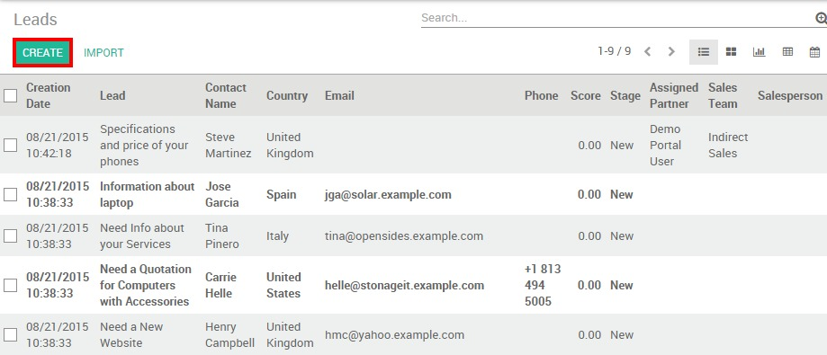
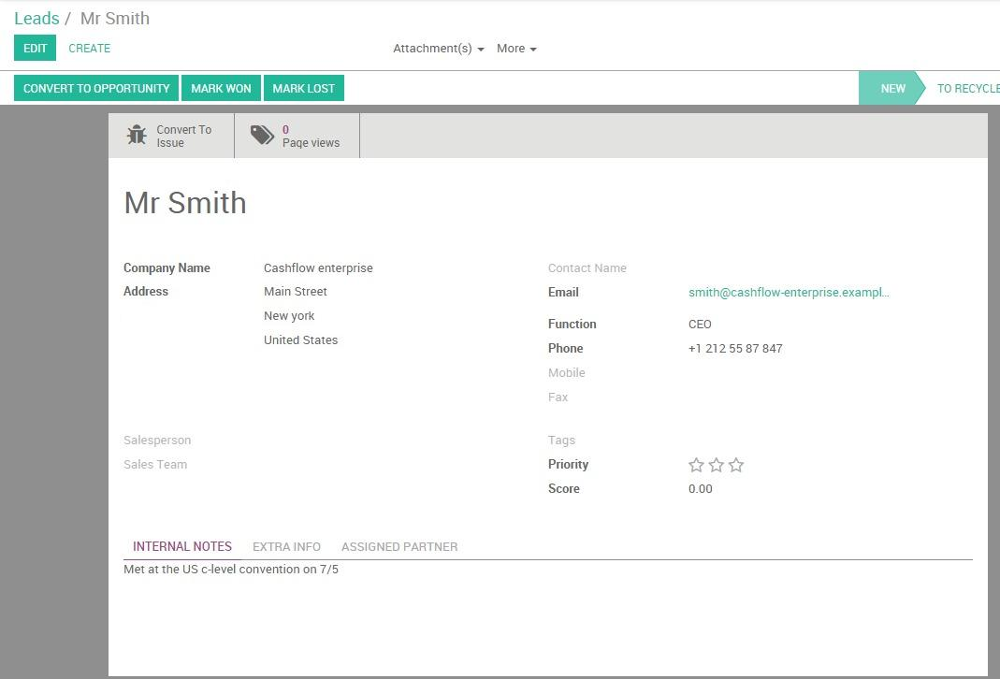
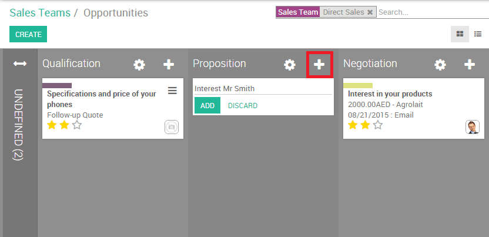

Odoo CRM allows you to manually add contacts into your pipeline. It can be either a lead or an opportunity.
Activate the lead stage
By default, the lead stage is not activated in Odoo CRM. To activate it, go to , select the option ""use leads if…** as shown below and click on Apply.

This activation will create a new submenu Leads under Sales that gives you access to a list of all your leads from which you will be able to create a new contact.
Create a new lead
Go to and click the Create button.
From the contact form, provide all the details in your possession (contact name, email, phone, address, etc.) as well as some additional information in the Internal notes field.
Note
your lead can be directly handed over to specific sales team and salesperson by clicking on Convert to Opportunity on the upper left corner of the screen.
Create a new opportunity
You can also directly add a contact into a specific sales team without having to convert the lead first. On the Sales module, go to your dashboard and click on the Pipeline button of the desired sales team. If you don't have any sales team yet, you need to create one first. Then, click on Create and fill in the contact details as shown here above. By default, the newly created opportunity will appear on the first stage of your sales pipeline.
Another way to create an opportunity is by adding it directly on a specific stage. For example, if you have have spoken to Mr. Smith at a meeting and you want to send him a quotation right away, you can add his contact details on the fly directly into the Proposition stage. From the Kanban view of your sales team, just click on the + icon at the right of your stage to create the contact. The new opportunity will then pop up into the corresponding stage and you can then fill in the contact details by clicking on it.
